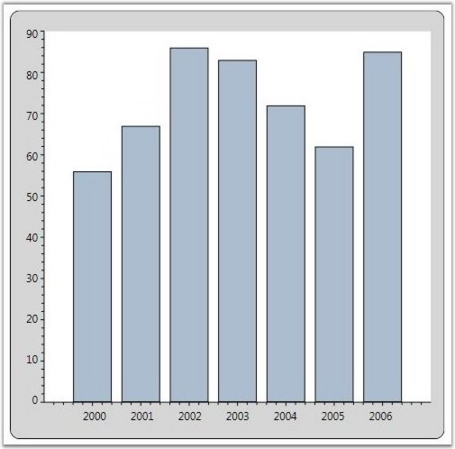
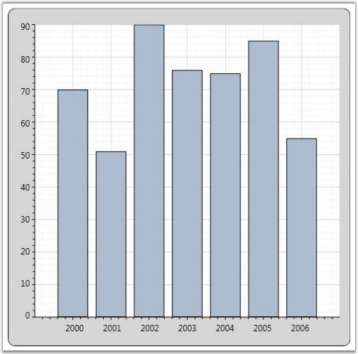
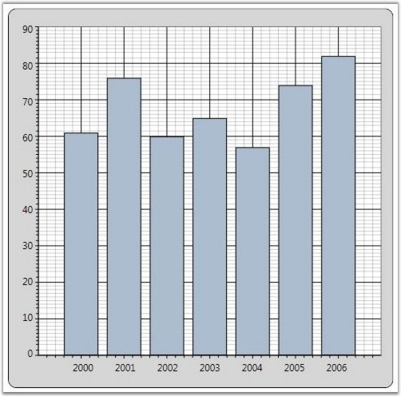

Chart for WPF allows you to show/hide the grid lines in the Chart Area using some attached properties in ChartArea. It also allows you to customize the look and feel of the grid lines using some attached properties.
The following lines of code can be used to hide the grid lines of an axis.
|
[XAML]
<Window.Resources> <local:ProductSalesCollection x:Key="SeriesData1"/> </Window.Resources> <sfchart:Chart> <sfchart:ChartArea Background="LightGray" GridBackground="White"> <sfchart:ChartArea.PrimaryAxis> <sfchart:ChartAxis sfchart:ChartArea.ShowGridLines="False"/> </sfchart:ChartArea.PrimaryAxis> <sfchart:ChartArea.SecondaryAxis> <sfchart:ChartAxis sfchart:ChartArea.ShowGridLines="False"/> </sfchart:ChartArea.SecondaryAxis> <sfchart:ChartSeries Type="Column" DataSource="{StaticResource SeriesData1}" BindingPathX="Year" BindingPathsY="Sales"/> </sfchart:ChartArea> </sfchart:Chart> |
|
[C#]
ChartArea.SetShowGridLines(Chart1.Areas[0].PrimaryAxis, false); ChartArea.SetShowGridLines(Chart1.Areas[0].SecondaryAxis, false); |

Figure 179: Chart displayed without Grid Lines
Grid lines style can be changed using the ChartArea.GridLineStroke attached property as follows.
|
[XAML]
<sfchart:ChartArea Background="LightGray" GridBackground="White"> <sfchart:ChartArea.PrimaryAxis> <sfchart:ChartAxis> <sfchart:ChartArea.GridLineStroke> <Pen Brush="#c6c6c6" Thickness="0.75"> <Pen.DashStyle> <DashStyle Dashes="1,2"/> </Pen.DashStyle> </Pen> </sfchart:ChartArea.GridLineStroke> </sfchart:ChartAxis> </sfchart:ChartArea.PrimaryAxis> <sfchart:ChartArea.SecondaryAxis> <sfchart:ChartAxis> <sfchart:ChartArea.GridLineStroke> <Pen Brush="#C6c6c6" Thickness="0.75"/> </sfchart:ChartArea.GridLineStroke> </sfchart:ChartAxis> </sfchart:ChartArea.SecondaryAxis> <sfchart:ChartSeries Type="Column" DataSource="{StaticResource SeriesData1}" BindingPathX="Year" BindingPathsY="Sales"/> </sfchart:ChartArea> |
|
[C#]
Pen pen = new Pen(Brushes.LightGray, 0.75); DashStyle style = new DashStyle(); DoubleCollection col = new DoubleCollection(2); col.Add(1); col.Add(2); style.Dashes = col; pen.DashStyle = style; ChartArea.SetGridLineStroke(Chart1.Areas[0].PrimaryAxis, pen); Pen pen1 = new Pen(Brushes.LightGray, 0.75); ChartArea.SetGridLineStroke(Chart1.Areas[0].SecondaryAxis, pen1); |

Figure 180: Chart with Custom Grid Lines
Small Tick Lines
The number of small ticks to be drawn per interval can be controlled using the SmallTicksPerInterval property. The following lines of code can be used to change the number of small ticks to draw per interval.
|
[XAML]
<Window.Resources> <local:ProductSalesCollection x:Key="SeriesData1"/> </Window.Resources> <sfchart:Chart> <sfchart:ChartArea Background="LightGray" GridBackground="White"> <sfchart:ChartArea.PrimaryAxis> <sfchart:ChartAxis SmallTicksPerInterval="4"/> </sfchart:ChartArea.PrimaryAxis> <sfchart:ChartArea.SecondaryAxis> <sfchart:ChartAxis SmallTicksPerInterval="6"/> </sfchart:ChartArea.SecondaryAxis> <sfchart:ChartSeries Type="Column" DataSource="{StaticResource SeriesData1}" BindingPathX="Year" BindingPathsY="Sales"/> </sfchart:ChartArea> </sfchart:Chart> |
|
[C#]
Chart1.Areas[0].PrimaryAxis.SmallTicksPerInterval= 4; Chart1.Areas[0].SecondaryAxis.SmallTicksPerInterval = 6; |

Figure 181: X Axis - SmallTicksPerInterval = "4"; Y Axis - SmallTicksPerInterval = "6"
See Also
ChartAxis Lines, ChartAxis OriginLines, Chart StripLines